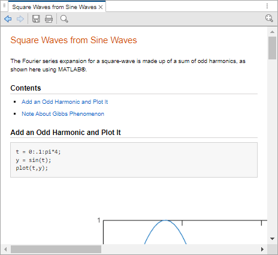

Web Browsers and MATLAB
About Web Browsers and MATLAB
In MATLAB®, web sites and documents display in either the HTML Viewer or your system web browser, such as Mozilla® Firefox®
MATLAB uses the different browsers to display different types of information:
Web sites and documentation (including custom documentation) display in your system web browser.
Other HTML files display in the HTML Viewer. For example, after publishing a MATLAB program file to HTML, the HTML file displays in the HTML Viewer.
System Web Browser
The system web browser that MATLAB uses depends on your platform:
On Microsoft® Windows® and Apple Macintosh platforms, MATLAB uses the default web browser for your operating system.
On UNIX® platforms, MATLAB uses the Mozilla Firefox web browser. You can specify a different system web browser for MATLAB using Web Settings.
HTML Viewer
Since R2025a
To display an HTML page in the HTML Viewer, double-click the file name in the
Files panel or use the web function.
The HTML Viewer may not support all the features that a particular website or HTML
page uses. For example, the HTML Viewer does not display .bmp
(bitmap) image files. Instead use .gif or
.jpeg formats for image files in HTML pages.
Before R2025a: The HTML Viewer was called the MATLAB web browser.

Specify Proxy Server Settings for Connecting to the Internet
If your network uses a firewall or another method of protection that restricts Internet access, provide information about your proxy server to MATLAB. Be aware that:
MATLAB supports non-authenticated, basic, digest, and NTLM proxy authentication types.
If a proxy with basic authentication is specified, MATLAB only supports HTTP connections. HTTPS connections are not supported.
You cannot specify the proxy server settings using a script.
There is no automated way to provide the proxy server settings your system web browser uses to MATLAB.
To specify the proxy server settings:
On the Home tab, in the Environment section, click
 Settings. Select MATLAB > Web.
Settings. Select MATLAB > Web.Select the Use a proxy server to connect to the Internet check box.
Specify values for Proxy host and Proxy port.
Examples of acceptable formats for the host are:
172.16.10.8andourproxy. For the port, enter an integer only, such as22. If you do not know the values for your proxy server, ask your system or network administrator for the information.If your proxy server requires a user name and password, select the Use a proxy with authentication check box. Then enter your proxy user name and password.
Ensure that your settings work by clicking the Test connection button.
MATLAB attempts to connect to
https://www.mathworks.com:If MATLAB can access the Internet, Success! appears next to the button.
If MATLAB cannot access the Internet, Failed! appears next to the button. Correct the values you entered and try again. If you still cannot connect, try using the values you used when you authenticated your MATLAB license.
Click OK to accept the changes.
Restart MATLAB to enable the changes.
Specify the System Web Browser for Linux Platforms
On Linux® platforms, you can specify the system browser to use. Specifying the system web browser is not supported on Windows and Mac platforms.
To specify the system web browser:
On the Home tab, in the Environment section, click
Settings. Select MATLAB > Web.Under System Web browser, in the Command field, specify the system command to open the browser, for example,
opera, which opens the Opera Web browser.Add options for opening your system web browser in the Options field. For example,
geometry 1064x860specifies the size of the window for Opera.Click OK.
Note
If you specify Firefox as the system web browser using the system command
firefox, specify a display option to ensure that the browser
opens correctly.